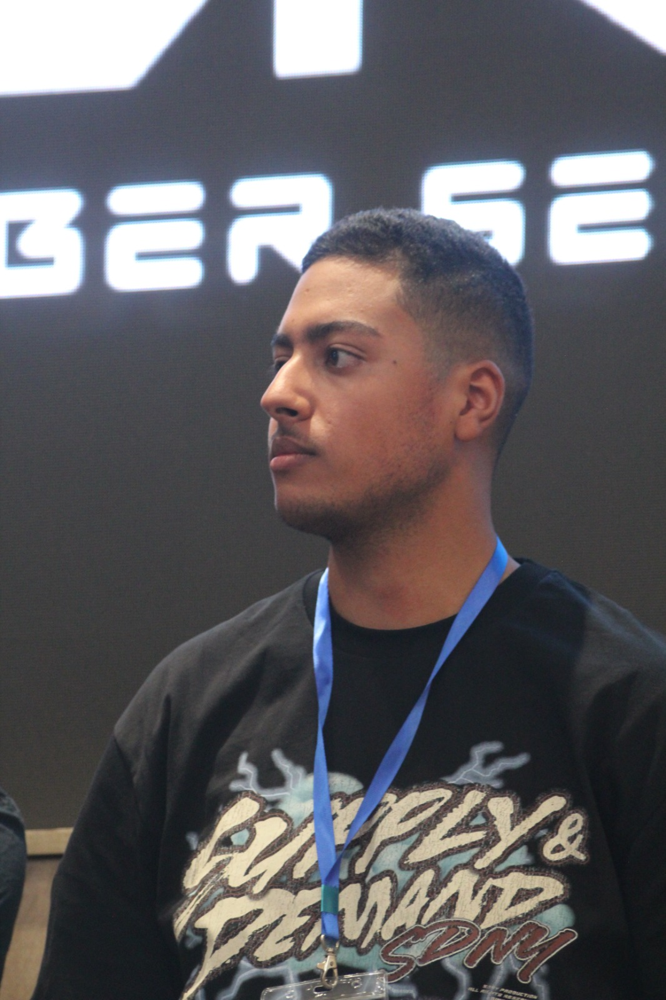

Aspiring Cybersecurity Engineer
Élève-ingénieur en Réseaux et Sécurité Informatique passionné par le Cloud, la cryptographie et les systèmes distribués. Leader associatif (Club SECORA) et développeur polyvalent, je conçois des solutions sécurisées, des communications LAN jusqu'aux infrastructures AWS. Toujours en veille technologique et à la recherche d'un stage pour transformer ma passion en impact professionnel.
“Only amateurs attack machines; professionals target people.”- Bruce Schneier